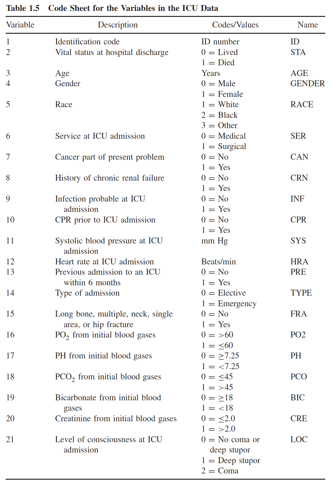

icu = read_csv(here("data", "icu.csv"))
icu1 = icu %>% mutate(STA = as.factor(STA) %>% relevel(ref = "Lived"))
icu2 = icu1 %>% mutate(CAN = as.factor(CAN) %>% relevel(ref = "No"),
CPR = as.factor(CPR) %>% relevel(ref = "No"),
INF = as.factor(INF) %>% relevel(ref = "No"),
LOC = as.factor(LOC) %>%
relevel(ref = "No Coma or Deep Stupor"))Homework 3
BSTA 513/613
Caution
Homework is ready to go!! (5/5/2025)
Purpose
This homework is designed to help you practice the following important skills and knowledge that we covered in Lesson 10:
- A bunch of work on interactions
Directions
You will need to download the datasets from our shared folder.
Please upload your homework to Sakai. Upload both your .qmd code file and the rendered .html file
- Please rename you homework as Lastname_Firstinitial_HW02.qmd. This will help organize the homeworks when the TAs grade them.
For each question, make sure to include all code and resulting output in the html file to support your answers
Show the work of your calculations using R code within a code chunk. Make sure that both your code and output are visible in the rendered html file. This is the default setting.
Tip
It is a good idea to try rendering your document from time to time as you go along! Note that rendering automatically saves your qmd file and rendering frequently helps you catch your errors more quickly.
Questions Part 1
Question 1
This question is taken from the Hosmer and Lemeshow textbook. The ICU study data set consists of a sample of 200 subjects who were part of a much larger study on survival of patients following admission to an adult intensive care unit (ICU). The dataset should be available in our shared folder. The major goal of this study was to develop a logistic regression model to predict the probability of survival to hospital discharge of these patients. In this question, the primary outcome variable is vital (survival) status at hospital discharge, STA. Clinicians associated with the study felt that a key determinant of survival was the patient’s age at admission, AGE. We will build to a multivariable logistic regression model while adjusting for cancer part of the present problem (CAN), CPR prior to ICU admission (CPR), infection probable at ICU admission (INF), and level of consciousness at ICU admission (LOC).
A code sheet for the variables to be considered is displayed in Table 1.5 below (from the Hosmer and Lemeshow textbook, pg. 23). We refer to this data set as the ICU data.
You will need to use some of the mutations implemented in HW 2, Q2, Part d.

Part a
Write down the population equation for the logistic regression model of STA on AGE, CAN, CPR, and INF. How many parameters does this model contain?
Part b
Using glm(), obtain the maximum likelihood estimates of the parameters of the logistic regression model in Part a. Using these estimates, write down the equation with the fitted values.
Part c
Assess the significance of the group of coefficients for all variables in the model using the likelihood ratio test. (Hint: part of the ratio in the LRT will be an intercept only model)
Part d
Fit a new model using only CAN and INF as the predictors, including an interaction between CAN and INF. Is there evidence that our model should have an interaction between CAN and INF (Hint: this requires a formal test of the interaction)?
Part e
Interpret the odds ratio for the main effects in the model from Part d. Please include the 95% confidence interval.
Part f
From the above model, fill out the following table for the odds ratios. Note, you will only need to report two odds ratios and you already have one from Part d & e.
| Cancer | Infection | Estimated odds ratio | 95% CI |
|---|---|---|---|
| Cancer part of present problem | Infection probable at ICU intake | ||
| No | |||
| Yes | FILL HERE | FILL HERE | |
| Cancer not part of present problem | Infection probable at ICU intake | ||
| No | |||
| Yes | FILL HERE | FILL HERE |
This is a really good way to report odds ratios for interactions between two categorical predictors! Might want to keep this in mind for your project!!
Part g
Interpret the odds ratio from the table in Part e. Please include the 95% confidence interval. What do you notice about the odds ratios (Hint: Think back to my last slides in Lesson 10: Interactions)?
Part h
Compute the predicted probability for a subject who does not have a present issue with cancer nor an infection upon admittance to the ICU. Compute the 95% confidence interval for the predicted probability. Can you use the Normal approximation?
Part i
Building off of Part e, fill out the following table for predicted probabilities. What do you notice about the predicted probabilities (Hint: Think back to my last slides in Lesson 10: Interactions)?
| Cancer | Infection | Predicted probability | 95% CI |
|---|---|---|---|
| Cancer part of present problem | Infection probable at ICU intake | ||
| No | FILL HERE | FILL HERE | |
| Yes | FILL HERE | FILL HERE | |
| Cancer not part of present problem | Infection probable at ICU intake | ||
| No | FILL HERE | FILL HERE | |
| Yes | FILL HERE | FILL HERE |
Part j
Interpret the predicted probability from Part g, including the confidence interval.
Question 2
We will continue with the same dataset from Question 1 above.
We will use the model from Question 1a for this question: \[\text{logit}(\pi(\textbf{X}))=\beta_0 + \beta_1 \cdot AGE + \beta_2 \cdot I(CAN=\text{``Yes"}) + \beta_3 \cdot I(CPR=\text{``Yes"}) + \\ \beta_4 \cdot I(INF=\text{``Yes"})\]
Part a
Assess the fit of the above model. You may use Hosmer-Lemeshow test or Pearson Residual as appropriate. Discuss your choice and interpret.
Part b
Assess the your model’s ability to discriminate vital status (STA) using AUC.
Part c
Let’s say a colleague found a different preliminary final model than yours. Using the below model that your colleague fit, compare your model to theirs using AIC and BIC.
\[\begin{align} \text{logit}(\pi(\textbf{X})) = & \beta_0 + \beta_1 \cdot AGE + \beta_2 \cdot I(SYS=\text{``Yes"}) + \beta_3 \cdot I(CPR=\text{``Yes"}) + \\ & \beta_4 \cdot I(INF=\text{``Yes"}) + \beta_5 \cdot I(CPR=\text{``Yes"}) \cdot AGE \end{align}\]
Question 3
This question stems from an example from an online textbook by Dr. Ramzi W. Nahhas. The dataset for this problem includes a subset of individuals from the 2019 National Survey on Drug Use and Health (NSDUH). Overall, our study aims included investigating potential risk factors for lifetime heroin use. Lifetime heroin use is a binary outcome, which we regress on age at first use of alcohol (alc_agefirst), age with 6 categories (demog_age_cat6), and sex assigned at birth (demog_sex).
load(here("data", "nsduh2019_adult_sub_rmph.RData"))
nsduh = nsduh_adult_sub %>%
dplyr::select(her_lifetime, alc_agefirst, demog_age_cat6, demog_sex) %>%
drop_na()Part a
Using the nsduh dataset from the above chunk of code, please run a regression model using lifetime heroin use as our outcome, and age at first use of alcohol, categorical age, and sex assigned at birth as covariates in our model. No need to write out your model, you just need to write the R code to run the regression and display the summary.
Part b
Are we encountering a numerical problem with our regression? If yes, please name the numerical issue. What first clued you into that issue? Provide conclusive evidence of this numerical issue (with a contingency table), and explain which variable(s) are causing this problem.
Part c
What would you do to “fix” this numerical issue? Please apply your “fix” and rerun the regression
Questions Part 2
The following questions are intended to give you practice in connecting concepts that will help you make decisions in real world applications.
Question 4
Using a similar table to the one in Lesson 8, go back through the parts in this homework and determine which test can be run.
| Wald test/CI | Score test | LRT | |
|---|---|---|---|
| Question 1, Part c: testing group of variables | |||
| Question 1, Part d: testing interaction | |||
| Question 2, Part e: creating 95% CI for main effects | |||
| Question 2, Part f: creating 95% CI for odds ratios |
Question 5
Look back at our slides for interactions, particularly the last slide.
Part a
In the lecture, we investigated an interaction between a binary variable and a continuous variable. In Question 1 of this homework, we investigated an interaction between two binary variables. What about the variables types were different? How did this change the presentation of estimated odds ratios and predicted probabilities?
Part b
How would you present the odds ratios and predicted probabilities if we had an interaction between a 3-category multilevel variable and a continuous variable?
Part c
How would you present the odds ratios and predicted probabilities if we had an interaction between a 4-category multilevel variable and a binary variable?
Homework 3 – Categorical Data Analysis Homework 3 – Categorical Data Analysis Homework 3 – Categorical Data Analysis Categorical Data Analysis BSTA 513/613 BSTA 513/613